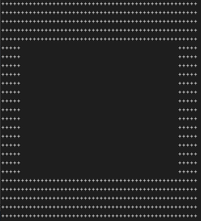
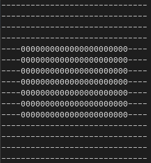
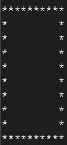

12. Прямоугольник.
Условие:
Нужно написать программу, которая спрашивает у пользователя:
- толщину линии,
- высоту,
- ширину,
- символ для линии,
- символ наполнения.
На основании введённых данных рисует прямоугольник на экране.
Примеры:
  
Код:
def my_print(fat, width, height, line_symbol, inside_symbol):
for i in range(fat):
print(line_symbol * width)
for i in range((height - 2 * fat)):
print(line_symbol * fat + inside_symbol * (width - 2 * fat) + line_symbol * fat)
for i in range(fat):
print(line_symbol * width)
# вводим толщину линии прямоугольника
while True:
fat = input("%125s" % "Введите толщину линий прямоугольника, к примеру (1, 2, 3 ... 10): ")
try:
fat = int(fat)
if fat > 10:
print("%124s" % "Слишком толстые линии. Введите другие.")
continue
else:
break
except:
print("%124s" % "Вы ввели не цифры.")
# вводим ширину прямоугольника
while True:
width = input("%125s" % "Введите ширину прямоугольника (ширина вводится с учётом толщины линии), к примеру (10, 20, 30 ... 100): ")
try:
width = int(width)
if width < (fat * 2 + 1):
print("%124s" % "Слишком узкий. Введите другие параметры.")
continue
elif width > 100:
print("%124s" % "Слишком широкий. Введите другие параметры.")
continue
else:
break
except:
print("%124s" % "Вы ввели не цифры.")
# вводим высоту прямоугольника
while True:
height = input("%125s" % "Введите высоту прямоугольника (ширина вводится с учётом толщины линии), к примеру (10, 20, 30 ... 100): ")
try:
height = int(height)
if height < (fat * 2 + 1):
print("%124s" % "Слишком низкий. Введите другие параметры.")
continue
elif height > 100:
print("%124s" % "Слишком высокий. Введите другие параметры.")
continue
else:
break
except:
print("%124s" % "Вы ввели не цифры.")
# ввод символа линии
while True:
line_symbol = input("%125s" % "Введите символ для линии. К примеру: \"*\", \"+\" или другой: ")
if len(line_symbol) > 1:
print("%124s" % "Вы ввели более одного символа.")
continue
elif line_symbol == " ":
print("%124s" % "Вы ввели пробел.")
continue
elif bool(line_symbol) is False: # пустая строка всегда даёт False
print("%124s" % "Вы не ввели ни одного символа")
continue
else:
break
# ввод символа для наполнения пространства внутри прямоугольника
while True:
inside_symbol = input("%125s" % "Введите символ для наполнения пространства внутри прямоугольника. К примеру: \" \", \"+\" или другой: ")
if len(inside_symbol) > 1:
print("%124s" % "Вы ввели более одного символа.")
continue
elif bool(inside_symbol) is False:
print("%124s" % "Вы не ввели ни одного символа")
continue
else:
break
my_print(fat, width, height, line_symbol, inside_symbol)